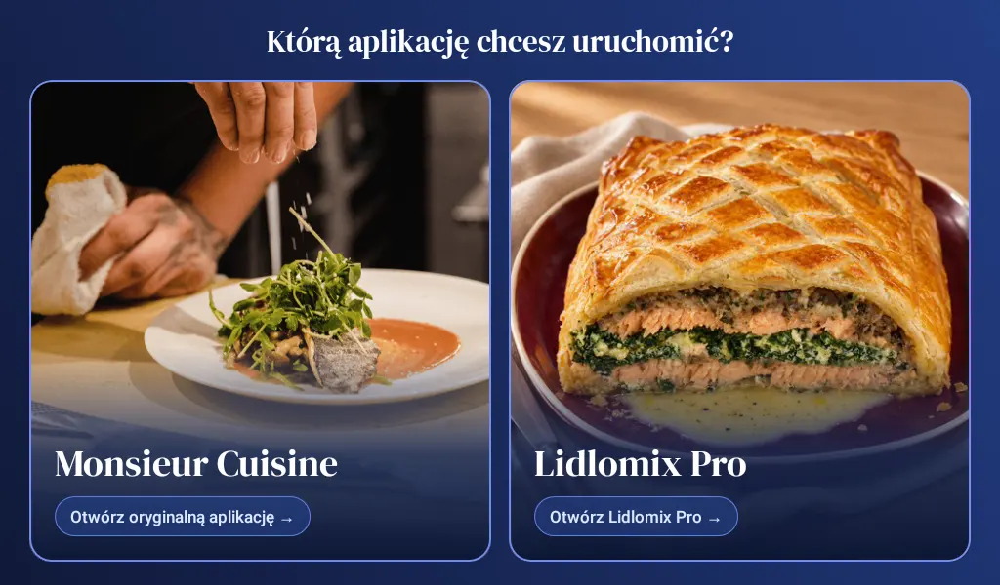
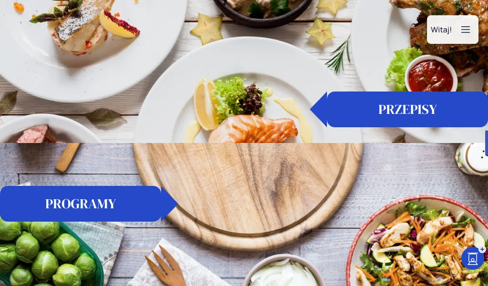
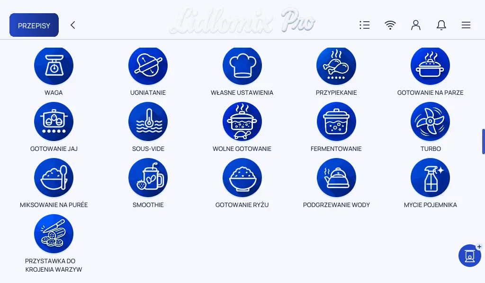
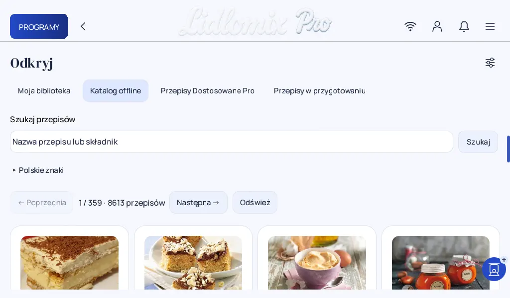
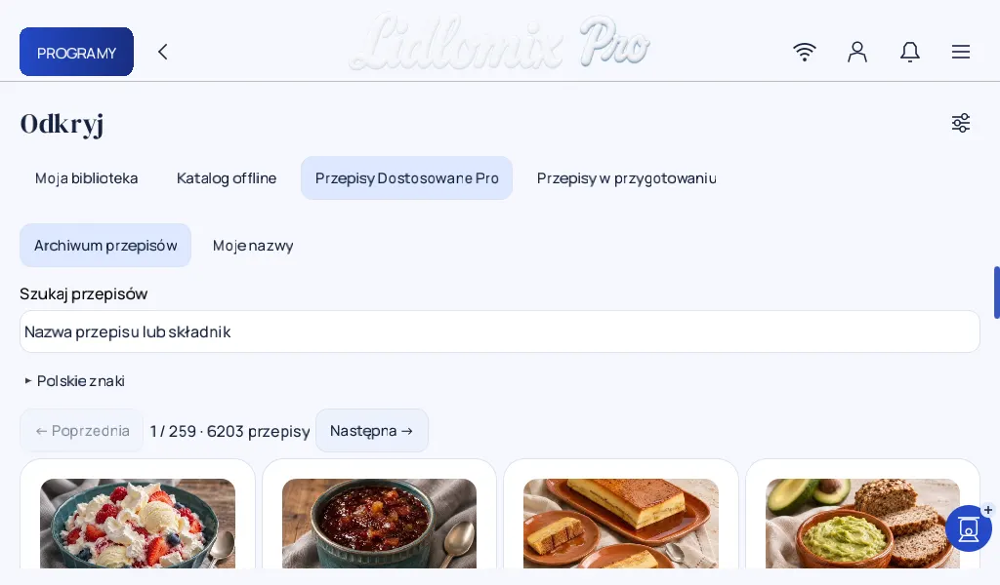

02 / Wydanie 0.15 ·
Dwie aplikacje na jednym Connect
Aplikacja była już w budowie, ale wciąż nie miałem sposobu, żeby uruchomić ją na robocie. Trop znalazłem w filmie, na którym ktoś grał w gry na Lidlomiksie.
Film pokazywał też, jak połączyć się z urządzeniem. U mnie połączenie zrywało się w połowie pracy i kilka razy wracałem do początku. Gdy wreszcie udało się uruchomić Pro, zależało mi na tym, by nadal dało się otworzyć fabryczne Monsieur Cuisine. Tak powstał ekran z dwiema kartami, który sprawdziłem również po restarcie. Jak połączyłem się z Androidem


1. Wybór aplikacji

Początkowo, żeby zmienić aplikację, wyłączałem i włączałem robota przełącznikiem. Później dodałem powrót do ekranu wyboru gestem od prawej krawędzi i restart z menu.
2. Menu Lidlomix Pro


Ikony w głównym menu zaprojektowałem od nowa. Przy przystawce do krojenia pokazuję warzywa, żeby od razu było jasne, do czego służy. Ikony wewnątrz poszczególnych programów są jeszcze w trakcie projektowania i wdrażania.
3. Katalog offline

Kiedy przełączałem język fabrycznej aplikacji, zmieniała się też oferta przepisów. Zebrałem przepisy z różnych wersji krajowych w jednym katalogu, przetłumaczyłem je na polski i usunąłem duplikaty. Zachowałem warianty dla poszczególnych modeli. Przepisy uwzględniają opracowane wcześniej zasady dopasowania nastaw.
Na testowym Connect katalog pokazuje 8 613 przepisów zapisanych w urządzeniu. Wyszukiwanie i otwieranie kart działa bez internetu. Wyniki pojawiają się od razu z lokalnej bazy, bez czekania na pobieranie przepisu.
4. Przepisy Dostosowane Pro

Komentarze
Wczytuję komentarze…